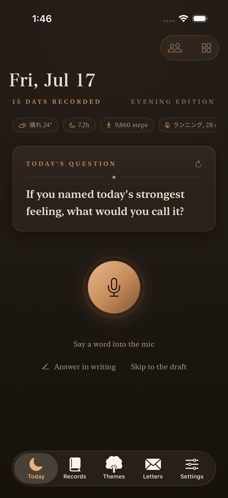
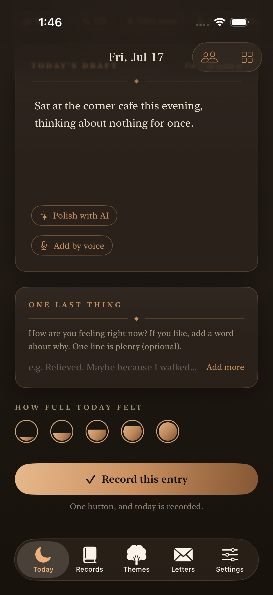
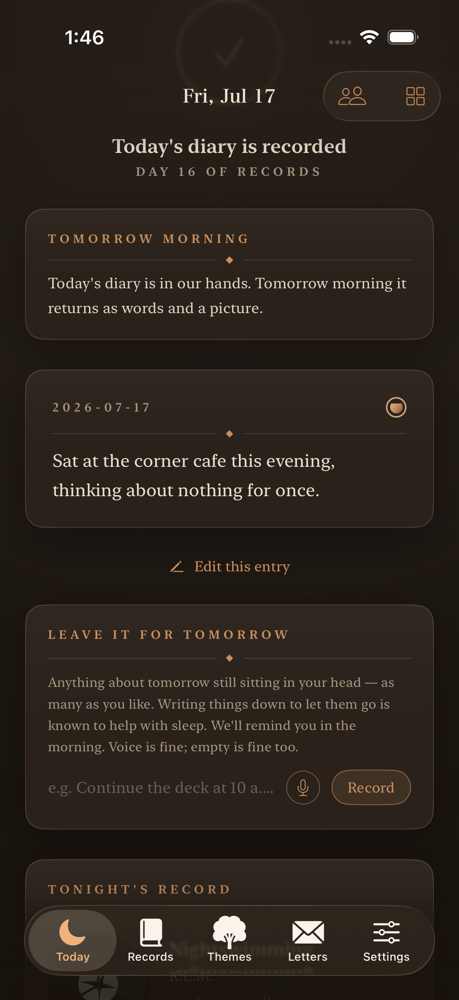
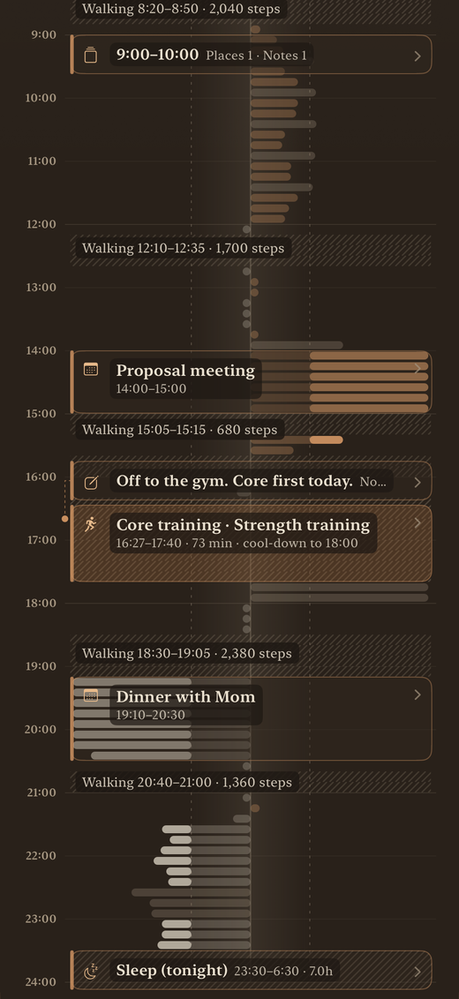
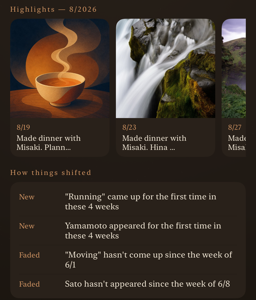
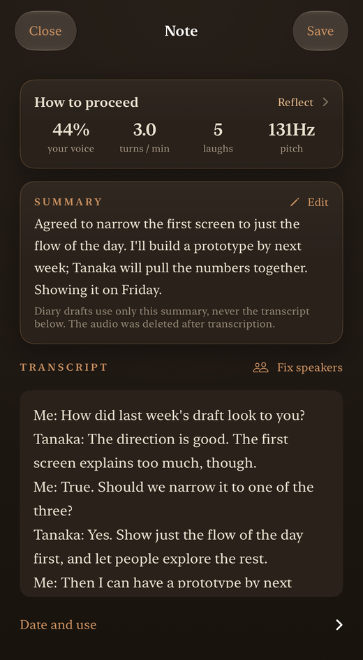
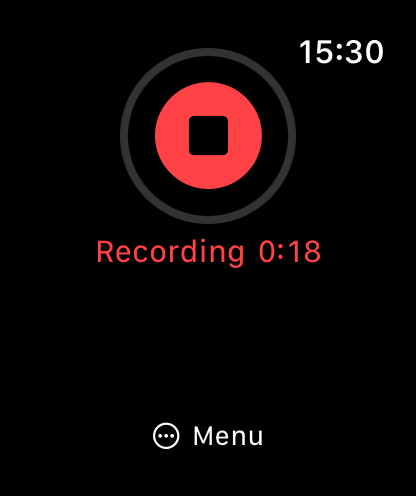
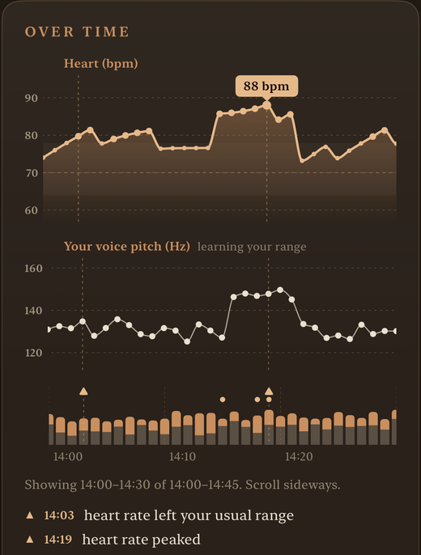
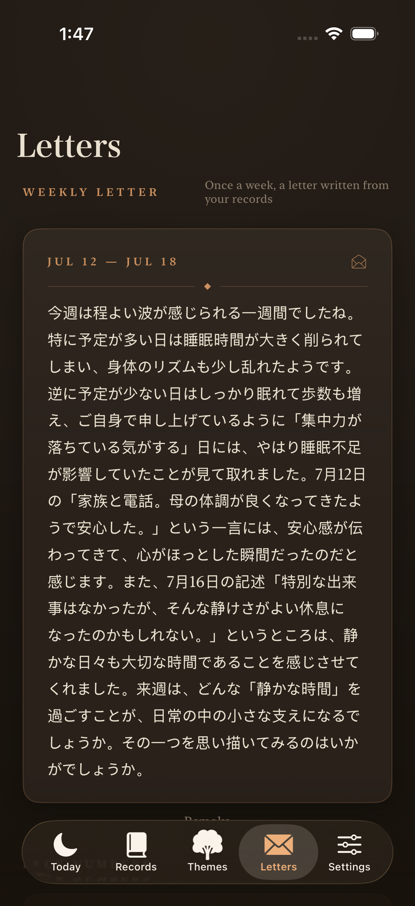

There's always someone
in your day.
Who you talked with, where you spent your time, what moved you.
Days that would otherwise slip away build up here as memories of the people in your life.
So one day you can say "oh, that's right." So someday the people you love can talk about it with you.
Even when you don't write,
today is kept.
One line
One question, drawn from your day.
Say a few words, or just pick.

Your day, in words
Places, photos, sleep, steps and plans
are already a draft.

Read, and keep
Change only what you want, then one tap.
Today's entry, quietly kept.

Give each day
its outline.
See the flow
of your day.
Plans, places, notes, workouts and sleep line up along the hours. With Apple Watch, you also see when your body was tense or relaxed, compared with your usual self at that time of day.

Changes, told
in plain words.
Someone new, someone you haven't seen in a while, a topic that stopped coming up. Each month's shifts are told in a few words. Tap a picture from that period's highlights to go back to the day.

Keep time with the people
who matter, in their words.
Keep a conversation from a spoken note, and it's transcribed on your iPhone and split by speaker. The recording is deleted once it's text. Conversations with people you name become part of your memories of them.


See where the conversation
came alive.
Your heart rate, the pitch of your voice, how much each of you talked, and laughter line up over the course of a conversation. Where your voice rose, the laughs gathered and your heart rate climbed, you can see when it came alive.

A morning note,
and a letter each week.
Each morning, a short note picks up from the day before. At the end of the week, a letter to you from seven days of records. The day's picture and tonight's record turn each day into something you can remember.

Your records
are yours.
No account
No email, no password. Start the day you open it.
Kept on your iPhone
Your diary and conversations are stored on your iPhone. They are not kept on the developer's servers.
Take it all, anytime
Export every record as Markdown or as a full copy. You can also keep a daily copy in iCloud Drive.
You choose where text is created
- On this iPhone onlyCreated with on-device Apple Intelligence.
- Apple's private cloudAccording to Apple, text sent is used only for the request, isn't stored, and isn't accessible even to Apple.
- Also use OpenAIOnly while you subscribe or during the preview, with your consent. Text sent is never used for training.
Exactly what is handled where is in our privacy policy.
Starting costs
nothing.
The daily diary, automatic records, drafting and polishing, and export are free forever. A morning note arrives once a week, too.
And for your first 3 mornings (up to 7 days), try everything in the subscription — no card required. You're never charged automatically.
- A morning note every day · weekly letters
- Conversation records (from Apple Watch too)
- The day's picture · tonight's record
- Everything in Yearly
- An easy way in
Family Sharing supported. Prices shown in USD; the App Store shows your local currency. Full playback of tonight's record requires an Apple Music subscription. Cancel anytime.
Questions
Do I really not have to write?
Really. A draft of your day is already there, built from places, photos, sleep, steps and plans. Read it, fix what you like, and keep it. On days you'd rather talk, one line into the mic is plenty.
Where are my records kept?
On your iPhone. There's no account, and your diary and conversations aren't stored on the developer's servers. You choose where text is created (on your iPhone, Apple's private cloud, or OpenAI) in Settings.
What happens to other people's voices in a conversation?
Recordings are turned into text on your iPhone and deleted afterward. Only the voice features of people you name are kept, to recognize who's speaking. Voice features of people you haven't named are deleted within 90 days. Whether to tell people in the room is up to you.
Do I need an Apple Watch?
No. With Apple Watch you can keep conversations from your wrist, and your day's timeline shows when your body was tense or relaxed.
I'm worried I'll quit halfway.
While you're away, the automatic record keeps going, and it's waiting for you the day you come back. There are no streaks, so there's nothing to lose.
What's the difference between free and the subscription?
Free gives you the daily diary, automatic records, drafting and polishing, and export forever, plus a morning note once a week. The subscription ($3.99/month, or $29.99/year with 7 days free) adds a morning note every day, weekly letters, conversation records, the day's picture and tonight's record. Your first 3 mornings (up to 7 days) are free to try with no card.
Keep the days
that slip away, starting today.
iPhone · iOS 18 or later (Apple Watch optional). The daily diary and automatic records are free forever.